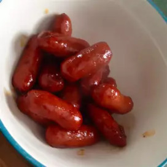

Little Smokies

Description
Little smokies are a quick and easy gameday snack that all of your guests
will enjoy. With minimal ingredients and a crockpot, you can be sure that
these little treats will be a homerun.
Ingredients
- 1 (18 ounce) bottle barbeque sauce
- 1 cup packed brown sugar
- ½ cup ketchup
- 1 tbsp Worcestershire sauce
- ⅓ cup chopped onion
- 2 (16 oz) packages little smokies
Directions
-
Stir together barbecue sauce, brown sugar, ketchup, Worcestershire
sauce, onion, and wieners in the bowl of a slow cooker. Cook on LOW for
2 hours, or until ready to serve.